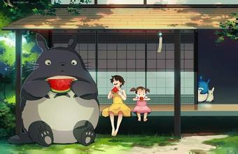

为了方便妻子草壁靖子养病，草壁达郎决定带着两个女儿草壁皋月和草壁米搬到草壁靖子所在疗养院附近的乡下，父女三人入住了一间年久失修的老房子。小姐妹俩很快发现看似平凡无奇的乡下有很多神奇的事物，无人居住的房屋里能聚能散还能飞的“煤灰”、森林里的小精灵、森林的主人龙猫和笑口常开的猫巴士。
一天，妹妹草壁米和姐姐草壁皋月吵了架之后，便独自出走去找自己生病住院的妈妈，途中却迷了路。姐姐在四处寻找无果的情况下，只好求助于龙猫。善良而温和的龙猫唤来猫巴士，载着姐姐找到 了迷路的妹妹，乘着龙猫电车，妹妹把亲手摘的玉米送给了妈妈，希望她早日康复。
一天，妹妹草壁米和姐姐草壁皋月吵了架之后，便独自出走去找自己生病住院的妈妈，途中却迷了路。姐姐在四处寻找无果的情况下，只好求助于龙猫。善良而温和的龙猫唤来猫巴士，载着姐姐找到 了迷路的妹妹，乘着龙猫电车，妹妹把亲手摘的玉米送给了妈妈，希望她早日康复。
